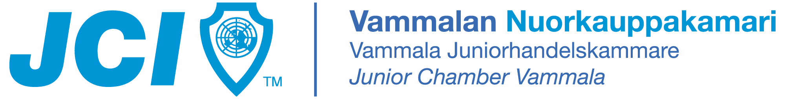
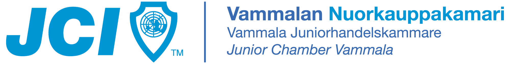

Lift UP
LANIT
Mitä?
Lift UP -lanit ovat huikea mahdollisuus pelata yhdessä toisten pelaajien kanssa sekä osallistua turnauksiin ja muuhun ohjelmaan. Ohjelmasta vastaa Manu huikeilla streemausesityksillään.
Milloin?
Lanit alkavat perjantaina 4.10.2019 kello 14 ja päättyvät vuorokautta myöhemmin lauantaina 5.10.2019 kello 14.
Missä?
Lanit järjestetään Kuninkaisten koulutus- ja kulttuurikeskuksella Huittisissa (Risto Rytin katu 70). Lanit pidetään kiinteistön liikuntasalissa.
Mitä osallistuminen maksaa?
Laneille osallistuminen ei maksa, mutta osallistuminen edellyttää ilmoittautumista etukäteen. Paikat täytetään ilmoittautumisjärjestyksessä.
TURNAUKSET
Laneilla on mahdollisuus osallistua yhteen tiimiturnaukseen ja yhteen sooloturnaukseen. Turnauksissa olevat pelit määräytyvät ilmoittautumisten perusteella. Turnaus järjestetään, mikäli siihen ilmoittautuu riittävästi pelaajia. Turnauksen pelit tullaan streamaamaan!
Tiimiturnaus
Tiimiturnaukset järjestetään yhdestä seuraavista peleistä:
Tiimiturnaukseen ilmoittautuessasi sinulta kysytään joukkue, jossa tulet pelaamaan.
Sooloturnaus
Sooloturnaus järjestetään yhdestä seuraavista peleistä:
Sooloturnaukseen ilmoittautuessasi sinulta kysytään gamertag.
INFO
Mitä mukaan laneille?
Tarvitset mukaan ainakin seuraavat asiat:
- kone ja tarpeelliset kaapelit
- jatkojohto
- verkkojohto
Miten saavun?
Kiinteistöllä on isot parkkipaikat, auton paikotus ei ole ongelma. Sisäänkäynti laneille tapahtuu Sahakadun puolelta, A-oven kautta. Tullessasi sinulle näytetään konepaikkasi sekä muut tarpeelliset asiat.
Mistä saan syötävää?
Voit tuoda mukanasi omat eväät. Oppilaitoksen opiskelijakunta pitää buffettia aulassa, josta voit ostaa mm. suolaista ja kahvia.
Mitä minun tulee vielä huomioida?
Hienoa, että kysyit! Muista, että lanit ovat päihteettömät!
Ilmoittautuminen
Jos haluat osallistua laneille, niin sinun tulee ilmoittautua etukäteen oheisen linkin kautta.
ILMOITTAUDU LANEILLE TÄSTÄ!Paikat täytetään ilmoittautumisjärjestyksessä!
YHTEYSTIEDOT
Jos sinulla on kysyttävää laneihin liittyen, niin voit ottaa yhteyttä seuraaviin henkilöihin:
040 140 7105
pekka.aalto(ät)sasky.fi
0400 129 652
jan.tuominen(ät)sasky.fi

 
